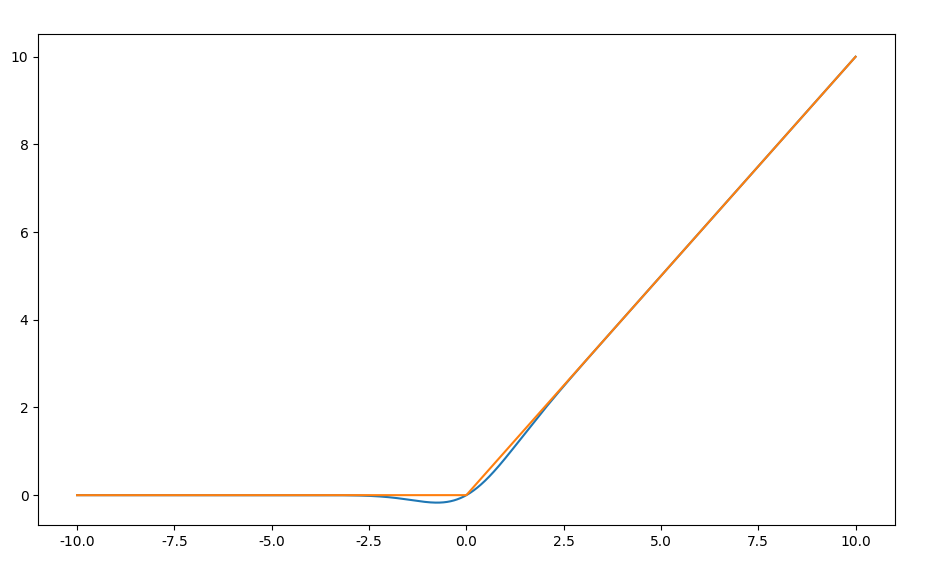
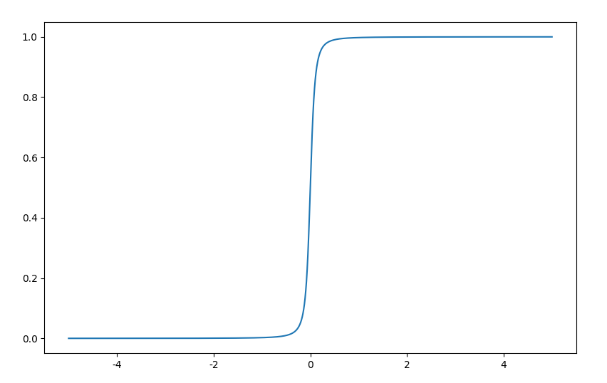

从函数光滑近似的角度统一理解激活函数
神经网络强大的表示能力应该归功于网络模型中的激活函数，深度学习中，很多数学形式其实都是光滑逼近的结果。比如激活函数，sigmoid、swish、gelu、softplus，这里从光滑近似的角度统一理解激活函数。
更新：Transformer使用的激活函数GELU。
关于激活函数
神经网络中激活函数的作用：
- 输出层，获得概率意义
- 中间层，产生非线性
- 门机制，如LSTM，信息筛选
激活函数作为输出层，获得概率意义；作为中间层，产生非线性，这些接下来会谈到。这里简单说说作为门机制的激活函数，比如以下网络模型，
称为Gated Linear Units (GLU)，这里激活函数$\sigma(x)$起到门控的作用。整体上看是一种swish形式的门机制。
激活函数的设计关注如下几点：
- 非线性，产生非线性
- 光滑性，以便求梯度
- 线性区，以便在一定范围内保持输出的均值（0中心）与方差统计特征不漂移
- 活性范围，关系到下层和输出
- 非饱和性
- 计算性能，计算复杂度不能太大
对于第三点，这里展开说说。所谓的线性区是要求激活函数在自变量$x$取值一定范围内，满足
这样，输入$x$和输出$x’$的均值与方差统计特征的变化不大，以保证网络学习的稳定。
关于次梯度，例如RELU激活函数在$x=0$处不可导，那么是不是对于深度学习模型来说就无法进行误差逆向传播优化？
事实上，在工程上，有一种叫做次梯度的解决方案。就以RELU函数为例，当$x \gt 0$时，梯度为1，当$x \lt 0$时梯度为0。而0这个位置不存在梯度，而次梯度即选择$[0, 1]$区间中的任意值。在实现时，一般会选择一个区间内的固定值。
逼近0-1函数
Heaviside step函数，
在深度学习中其意义是，如果logit取值为负半轴，则把类别判别为负类（0），如果取值为正半轴，则把类别判别为正类（+1）。另外，从生物学上看，$H(x)$可以直接描述神经元的激活或非激活状态，或者说是一个开关，要么开，要么关。但是$H(x)$并不光滑，对于模型训练来说，寻找其光滑逼近版本相当重要。
这个取值可以改为$1,-1$，即，
这个函数不可导，模型优化困难。考虑到
如果规定$H(0) = \frac{1}{2}$，那么有$H(x) = \frac{1}{2}[1 + \operatorname{sign}(x)]$。
当$x \ne 0$时，$H(x)$可以用$|x|$表示，
根据$H(x)$的分段特性可以为均匀分布的概率密度函数提供紧凑的表达形式，如下
$H(x)$本身难计算梯度，其梯度是一个非常特殊的函数狄拉克函数$\delta(x)$，
为此，应用于深度学习需要其光滑版本。以sigmoid为首的很多激活函数就是逼近$H(x)$的光滑版本。
sigmoid
对$H(x)$函数的逼近是寻找一个S型函数且区间在$(0, 1)$或$(-1, 1)$，最常见的是$\sigma(x)$函数，
在Sigmoid函数导出的另外一个角度中我们知道，$\sigma(x)$函数来说$\max(x)$的光滑逼近$ \ln(1 + e^x)$的梯度，
可以用$\tanh(x)$来表示，
这两个激活函数都存在当$x$很大时梯度饱和，即接近0。
tanh
注意到，$\tanh (x)$可以用$\sigma(x)$表示
是$\sigma(x)$的一个仿射变换，因此还是S型函数，不过取值区间变为$(-1, 1)$。
$\tanh(x)$与$\sigma(x)$的梯度与自身相关，即：
这个性质很有用，可以复用已有的计算结果。
softsign
softsign激活函数为，
该激活函数来自$\operatorname{sign}(x)$的近似，
softsign激活函数可以推广开来，
按照类似的思路，有，
激活函数用S型函数逼近0-1阶跃函数的好处是在$x$较小时，有
例如$\tanh(x) \approx x$，这样通过激活函数输出后，均值和方差大致保存不变，这样便于模型的训练和优化。
逼近RELU函数
RELU函数，
从神经元的角度看，RELU激活函数描述两种状态：
- 非激活状态，即负半轴
- 激活状态的激活程度，即正半轴，且不具有饱和性
用一句话来说就是单边抑制宽兴奋边界，这是有生物学合理性。但是从数学角度看，RELU的定义非光滑，不利于优化。
RELU激活函数的图形呈现无上界有下界，但有一个严重的问题，即死区，当网络输出值在负半轴时，非激活状态一直延续到后层。解决方案有：
- 平滑RELU，平滑$H(x)$或平滑整体$x \times H(x)$，也就是寻找$\max(0, x)$的光滑版本，如果是前者，则寻找一个S型函数逼近即可。
- 分段化RELU，使其负半轴取值不为0
简而言之，如果找到$H(x)$的光滑逼近函数，那么也就找到$\operatorname{relu}(x)$的光滑逼近；如果找到$\max(0, x)$的光滑逼近，那么也找到$\operatorname{relu}(x)$的光滑。
RELU改进应该满足一下几点：
- 平滑RELU的函数应该连续可导
- 平滑RELU的函数负半轴应该非单调，以便增加非线性
- 平滑RELU的函数，在$x$较小时，$R_s(x) \approx x$
RELU改进方案：
- Noisy ReLU
- Softplus
- ELU
- SELU
- GELU
下面我们来谈谈它们的设计思路。
Noisy ReLU
考虑添加噪声
这个激活函数的出发点是增加鲁棒性。
ELU & SELU
改变RELU死区问题的一个思路是分段化，负半轴通过一定技巧避免其取值为0，常见有ELU函数，
其中 $\alpha \ge 0$ 。
SELU函数，
其中$\lambda=1.0507,\alpha=1.67326$ ，这两个参数用来微调ELU激活函数。SELU激活函数来自论文Self-Normalizing Neural Networks。论文提到该激活函数不使用Normalization手段能够自动归一化。
Softplus
Softplus函数为，
我们都知道Logsumexp是max的光滑近似，
因此取$n=2, x_1 = x, x_2 = 0, \alpha=1$有，
因为是 RELU 的光滑化版本，故称为 SmoothReLU。这里Logsumexp可以认为是Softplus的推广。
此外，还有积分思路，
取$k=\frac{1}{2}$得Softplus函数。Softplus激活函数是单调的，负半轴无法提供更多的非线性功能。
Swish
过去的一篇文章Google的激活函数Swish是怎么设计出来的？也分析过Swish的导出，可参看。Swish函数为，
$\sigma(x)$可以看做是一个门，控制$x$的输出。易知，
然后注意到Heaviside step函数$H(x)$可以用$\tanh(x)$逼近，即，
我们取$k=\frac{1}{2}$，有基于$H(x)$光滑逼近的$\operatorname{relu}(x) $近似，
Mish
后面的文章更新了Mish激活函数的分析，见Mish激活函数的设计思路。
GELU
GELU，全称为Gaussian Error Linear Unit，也算是RELU的变种。对比一下和RELU的区别，

首先我们知道误差函数$\operatorname{erf}(x)$，
是一个像logistics函数图像一样的函数，易证$\operatorname{erf}(\frac{x}{\sqrt{2}}) \in (-1, 1)$，函数图像如下，

可以变换到$(0, 1)$区间，即$\frac{1}{2} \Big[ 1 + \operatorname{erf}(\frac{x}{\sqrt{2}}) \Big]$，是$H(x)$的光滑近似。有趣的是，标准正态分布的累积分布函数可以用$\operatorname{erf}(x)$表示，
GELU可以由标准正态分布的累积分布函数表示，
因此有，
由于$\frac{1}{2} \Big[ 1 + \operatorname{erf}(\frac{x}{\sqrt{2}}) \Big]$，是$H(x)$的光滑近似，于是有，
论文Gaussian Error Linear Units (GELUs)中还有如下结论近似$\operatorname{GELU}(x)$，
测试该函数可以用scipy.special.erf，有些框架并没有提供该函数则会使用近似。也就有，
其实该近似挺符合我们的数学直觉，$\operatorname{erf}(\frac{x}{\sqrt{2}})$本身是S型函数，$\tanh(x)$也是S型函数，因此，
形式的函数也是S型函数，通过$a,b$参数控制S形状可以逼近$\operatorname{erf}(\frac{x}{\sqrt{2}})$。
自行构造
光滑近似的构造是相当灵活的，可以自行构造。例如根据
有，
于是relu激活函数有近似，
这里$\alpha \to 0$取等号，实践中可以取$\alpha = 0.01$。
类似地，考虑$|x| \approx \sqrt{x^2 + \alpha}$，有
其中$\alpha$是一个可以小的数，如$\alpha = 0.1$。可视化图像如下，

考虑到$\operatorname{relu}(x) = x \times H(x)$，只要找到$H(x)$的光滑近似，自然就有$\operatorname{relu}(x)$的光滑近似。因此，也有，
诸如此类，等等。
补充：更多自行设计激活函数的思路可看最新文章天马行空：设计自己的激活函数。
总结
本文从光滑近似的角度统一理解激活函数。函数光滑近似能够创造更多的性能优良的激活函数。
sigmoid类激活函数的本质是平滑$H(x)$，relu类函数的本质是平滑$\operatorname{relu}(x) = x \times H(x)$。
对$\operatorname{relu}(x) = \max(0, x) = x \times H(x)$的光滑近似能够创造更多的激活函数，光滑近似思路有两种，平滑$H(x)$或平滑整体$x \times H(x)$，如果是前者，则寻找一个S型函数逼近即可，不同的逼近方式获得不同的激活函数。
转载请包括本文地址：https://allenwind.github.io/blog/10705
更多文章请参考：https://allenwind.github.io/blog/archives/